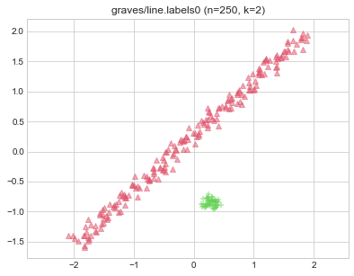
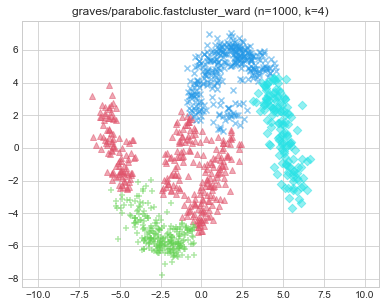
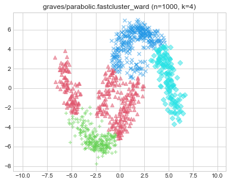

Results
Datasets
graves/dense (n=200, d=2)


graves/fuzzyx (n=1000, d=2)


graves/line (n=250, d=2)
 


graves/parabolic (n=1000, d=2)
 
 


graves/ring (n=1000, d=2)


graves/ring_noisy (n=1050, d=2)


graves/ring_outliers (n=1030, d=2)


graves/zigzag (n=250, d=2)


graves/zigzag_noisy (n=300, d=2)


graves/zigzag_outliers (n=280, d=2)